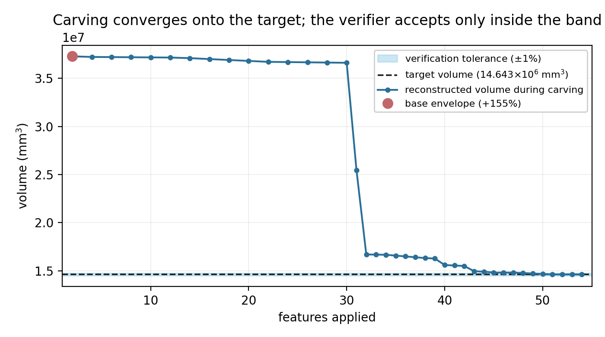

A STEP file imports into a parametric CAD system as one frozen lump. The design history is gone: no pad depth to change, no hole diameter to edit. featuretree recovers that history — sketches, pads, pockets, revolves — and gates every recovery by re-executing the recovered tree and comparing the result against the input. It answers VERIFIED, PARTIAL, or it refuses. The refusal matters more than the acceptance: a silently wrong feature tree is worse than no feature tree, because you would edit it.
On the eleven-part NIST MBE conformance corpus it refused three parts outright — CTC-02, FTC-07 and FTC-10. That was the published result. The refusals looked principled: those are the ugly parts, full of threads and blends, and the honest thing for a recogniser to do with geometry outside its vocabulary is to say so.
The refusals were not the vocabulary. They were two thresholds in the front end, and neither one had to be where it was.
What was actually blocking
The recogniser finds an extrude axis by counting how many faces are inconsistent with a prism swept along each candidate direction — angled walls, cross-holes, anything spherical or freeform. Axes with too many non-conforming faces were dropped. The threshold was 40% of faces.
FTC-07 and FTC-10 are threaded parts. Their best axes score 47.7% and 55.0% non-conforming, and the offending faces are almost entirely tori, cones and spheres — which is to say, modelled thread and blend geometry. They were rejected before their cross-section was ever looked at. The threshold was measuring the wrong thing: presence of thread geometry, not absence of a prismatic profile.
CTC-02 failed differently. It passed the axis gate at 32.9%, then died on the next step, which required the cross-section at some sampled height to be a single connected region. Sampling six heights, every one of them landed in a tapered upper region whose outer wire is ellipses and hyperbolas — the signature of slicing a cone off-axis.
FTC-07 had the same shape of problem for a different reason: its section is disjoint at every height, because the part is two parallel lobes. Two equal regions of 1013.4 mm² sitting side by side. "Disjoint at every height" was being treated as a failure when it is in fact a description: a part made of several parallel prisms. The fix is to emit one sketch and one pad per region, which is something the IR could already express and the recogniser simply never tried.
Why loosening a threshold was safe
The axis threshold is a recall knob, not a correctness knob, and that distinction is structural rather than empirical. Verification sits downstream of axis selection and is independent of it: the recovered tree gets re-executed and compared to the input no matter which axis produced it. So loosening the gate can only move a part from REFUSED to PARTIAL or VERIFIED. It cannot manufacture a false accept, because the thing that decides acceptance never sees the threshold.
That is the practical payoff of separating recognition from acceptance, and it is worth being concrete about what it buys: recall can be tuned freely without re-auditing soundness. We moved the gate from 40% to 75% and added the multi-region path.
| Before | After | |
|---|---|---|
| VERIFIED | 3 | 3 |
| PARTIAL | 5 | 8 |
| REFUSED | 3 | 0 |
| CTC-01 reconstruction IoU | 99.841% | 99.860% |
| FTC-08 volume residual | 52.55% | 32.61% |
No false accept appeared. All three VERIFIED parts were re-checked with rotation-aware intersection-over-union and still exceed 99.68%; CTC-01 improved slightly. FTC-08, which was already recovering, improved by twenty points because the wider gate let a better axis win. Refusal is still reachable — a torus is still refused — it simply is not exercised by this corpus.

The picture above is the argument in one plot, on the one part that recovers cleanly: a base envelope 155% too big, then 54 carving operations bringing it down into the tolerance band. The verifier accepts only inside the band.
Three harness bugs, each caught by producing an absurd number
The measurement code was less trustworthy than the thing it was measuring. Extending the IoU harness to score failed recoveries — previously they had no IoU at all, which meant the parts we most wanted a number for were the ones with none — broke it three separate ways. Each break was found because the output was obviously impossible, which is the only reason they were found at all.
- One bad boolean killed a whole part. OpenCASCADE threw
Null TopoDS_Shapeon one of 24 orientations and took the other 23 with it. Now each orientation fails independently. - A hard crash returned nothing. One orientation took the OCCT process down with a segfault, which no
try/exceptcatches. The worker now streams its best-so-far, so the parent falls back to the last checkpoint. - An impossible IoU of 50,133%. A degenerate union came back with a volume smaller than its own operands, which drove the inclusion–exclusion intersection wildly positive. A sound union contains both inputs, so
U ≥ max(A,B)and IoU lands in [0,1]. Violations are now discarded as failed orientations rather than recorded as data.
That last one is the uncomfortable one. It produced a number, the number went into a results table, and only its sheer magnitude flagged it. A degenerate boolean that returned a plausible wrong number would have shipped.
Two things we had to correct
A headline number went stale, and nothing rendered visibly wrong. The published preprint reported that on CTC-01, over-cut and uncut material partially cancel in the volume check, understating the true geometric discrepancy by 1.56×. Re-running the decomposition after the recogniser change gives 1.01× — the new recovery is almost purely over-cut, 20,397 mm³ against 62 mm³.
The figure was in the abstract, the README and the figures README, and a front-end change that was not aimed at the error analysis moved it by half its own value. We kept both numbers in the paper, because the volatility is a better argument than either figure: nothing in a volume-based criterion bounds that error term, and it drifts freely under unrelated implementation choices. A criterion whose error term does that is not one to accept results on.
And a claim was retracted before it published. The new IoU numbers for failed recoveries were briefly written up as showing that one part — which agrees with its target to 2.43% on volume — overlaps it by "no more than 25%". That is backwards. The measurement searches 24 orientations under a fixed alignment and takes the best, which makes it a lower bound: it can certify that a recovery is largely right, and can never establish that one is poor. The interesting reading was the unavailable one.
The argument was rebuilt on a fact that needs no bound: no orientation of that reconstruction matches the input's bounding-box extents to within 0.05 mm. So 97.6% volume agreement carries no implication of 97.6% shape agreement — which is the point, and it survives without the number that could not support it.
What this says about verified generation
The interesting result is not the zero. It is that three refusals were a threshold wearing a principle's clothes. "The part is outside our feature vocabulary" and "our axis prefilter is tuned conservatively" produce the same output and read identically from the outside. Telling them apart required instrumenting the refusal path and asking, per part, which line actually raised.
The architecture is what made the fix cheap and safe. Because acceptance is a separate stage that re-executes the recovered program and compares geometry, the front end can be made as aggressive as you like and the worst case is wasted compute. If recognition and acceptance had been one scoring function — which is the natural way to write it — then every threshold change would have been a soundness change, and this would have been a week of re-auditing instead of an afternoon.
The remaining honest gap: eight of eleven parts are PARTIAL, and we can put a floor under how much of each was recovered but not a ceiling. Establishing how wrong a partial recovery is needs real registration rather than a 24-orientation search, and that is the single change that would most improve the evaluation.
Code is at punkfab/featuretree, MIT. The paper, with the full NIST table and the prior-art scan behind its deliberate lack of a novelty claim, is at 10.5281/zenodo.22848792. Every number here regenerates from the commands in paper/figures/README.md.